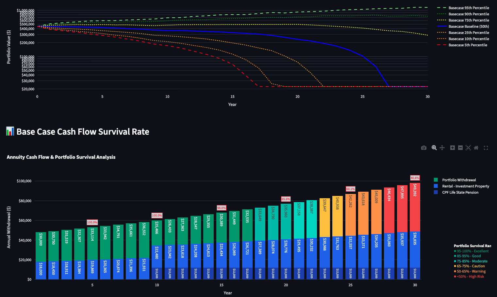

Overview
Monte Carlo simulation for retirement planning
Monte Carlo simulation is the gold standard methodology used by institutional investors, pension funds, and financial risk managers to model uncertainty. Instead of projecting a single "expected" outcome, it generates thousands of possible futures and measures how often your plan survives.
Each simulation run follows the same five-step logic:
1
Generate random market returnsFor each year of your planning horizon, generate realistic returns for every asset class — respecting how assets move together (correlations) and how volatile each one is.
2
Calculate annual cash flowsFor each year: portfolio growth, income (pensions, rental), taxes, withdrawals, and expenses.
3
Carry the balance forwardEnd-of-year balance becomes next year's starting balance.
4
Track portfolio survivalRecord whether and when the portfolio runs out of money.
5
Repeat thousands of times5,000 iterations by default. Build a probability distribution of outcomes.
The result is not "you'll have $1.2M at age 80." The result is "there's a 73% chance your money lasts to 85, and a 12% chance you run out by 76."
Return Generation
Why we use Student-t distributions (not normal)
Most retirement calculators assume investment returns follow a normal (Gaussian) distribution — the classic bell curve. This assumption is dangerous for retirement planning because it systematically underestimates the frequency of extreme market events.
Real markets crash more often and more severely than a bell curve predicts. The 2008 Global Financial Crisis, the dot-com bust, the COVID crash — these are events that a normal distribution considers nearly impossible, yet they happen roughly once per decade.
RetireSIM defaults to the Student-t distribution, which has heavier tails. The key parameter is ν (nu) — the degrees of freedom — which controls how "fat" the tails are:
| ν Range | Tail Behaviour | Typical Use |
|---|
| 5–7 | Very fat tails (frequent extreme events) | Individual stocks, crypto |
| 10–15 | Moderately fat tails | Equity indices |
| 30+ | Approaching normal distribution | Stable bonds |
Each asset class has its own ν value, so equities can have fatter tails than bonds — reflecting observed market behaviour. Users can configure these parameters or use the calibrated defaults.
Traditional calculators show one smooth line. Monte Carlo reveals the full range of possible outcomes.
Multi-Asset Modelling
Correlated returns across 7 asset classes
Real assets don't move independently. When equities crash, REITs tend to fall too. Bonds often hold steady or rise. Precious metals provide mild diversification. Ignoring these correlations produces misleading results — either too optimistic (if you assume all assets diversify perfectly) or too pessimistic (if you model crashes in isolation).
RetireSIM models returns across seven asset classes simultaneously using a full covariance matrix:
| Asset Class | Role in Portfolio |
|---|
| Equities | Growth engine, highest volatility |
| Bonds | Stability, low correlation to equities |
| REITs | Income-producing, correlated with equities (0.7) |
| Precious Metals | Crisis hedge, mild diversification (0.1 with equities) |
| Crypto | High growth potential, very fat tails |
| Real Estate | Illiquid, property appreciation and rental income |
| Cash | Minimal volatility, liquidity buffer |
All correlations are user-configurable. The default matrix is calibrated to observed market relationships, but users who believe correlations will change (for example, in a rising rate environment) can adjust them.
Volatility drag correction
Over time, volatility reduces your compound (geometric) returns even if your average (arithmetic) return stays the same. This is a mathematical certainty, not an assumption:
Geometric Mean ≈ Arithmetic Mean − (Portfolio Variance / 2)
RetireSIM applies this correction at the portfolio level (accounting for diversification benefits from correlations), then adds asset-specific refinements for highly volatile assets. This two-layer approach is more accurate than applying drag per-asset independently, because diversification genuinely reduces portfolio variance.
Advanced Modelling
Mean reversion (Ornstein-Uhlenbeck process)
Markets don't follow a pure random walk over long horizons. Empirical evidence shows that periods of extreme over- or under-performance tend to partially reverse. After a prolonged bull market, expected forward returns are typically lower. After a crash, expected returns are typically higher.
RetireSIM optionally models this using the Ornstein-Uhlenbeck mean reversion process:
Adjusted Return[t] = Random Return[t] + θ × (μ − Previous Return[t−1]) × Δt
Where θ (theta) is the mean reversion speed: 0 means pure random walk, 0.1–0.3 is mild reversion, and 0.5+ is strong reversion. Each asset class can have its own reversion speed.
Why this matters: Without mean reversion, long-horizon simulations can produce unrealistically extreme outcomes — scenarios where equities return 30% per year for a decade, or crash for 15 consecutive years. Mean reversion makes long-term projections more realistic without reducing short-term volatility.
The Core Engine
Year-by-year simulation loop
For each of the 5,000 simulation iterations, for each year of the planning horizon, the engine executes these calculations in order:
1. Investment returns
The portfolio return is calculated as the weighted sum of all asset class returns based on the current allocation. Capital gains and income (dividends, bond coupons) are computed separately.
2. Taxes
Capital gains tax is applied to positive gains only. Income tax is applied to income yield. This is a deliberate simplification — real tax systems have loss carry-forward rules, but modelling this across thousands of simulations adds complexity with marginal impact on long-term projections.
3. Cash flows
Four types of cash flows are calculated for each year, each with independent growth rates and timing:
| Type | Examples | Growth |
|---|
| Annuity / Income | CPF Life, rental income, pensions | User-defined rate per stream |
| Recurring Expenses | Living costs, insurance, healthcare | User-defined rate (or inflation) |
| One-Time Inflows | Inheritance, property sale | None (lump sum) |
| One-Time Outflows | Property purchase, wedding | None (lump sum) |
4. End-of-year balance
Key design decision: During the withdrawal phase, annuity inflows (pensions, rental income) offset the required portfolio withdrawal. If your pension covers $20,000 of a $48,000 annual expense, only $28,000 needs to come from the portfolio. This is why adding income streams — like CPF Life — dramatically improves success rates.
If the end-of-year balance falls below zero, it stays at zero. The simulation does not model debt or negative balances. The year of depletion is recorded for the success rate calculation.
The Hidden Risk
Sequence of returns risk
This is arguably the most important risk that traditional retirement calculators completely ignore.
Consider two retirees who both achieve an average 7% return over 30 years. Retiree A gets strong returns in the first five years, then a crash in year six. Retiree B gets a crash in year one, then strong returns after. Despite having the same average return, Retiree B's portfolio may be depleted decades earlier — because early losses are amplified by ongoing withdrawals.
A traditional calculator shows one smooth declining line. It tells you nothing about the range of possible outcomes.
Monte Carlo simulation captures this risk naturally. Each of the 5,000 iterations generates a different sequence of returns, so the model reveals how vulnerable a plan is to early bad years. This is why the success rate — the percentage of scenarios where your money lasts — is a far more useful metric than a single projected balance.
Crisis Scenarios
Historical stress testing
Beyond random Monte Carlo scenarios, RetireSIM allows you to inject a specific historical or custom market crash into any year of your plan. When a crisis scenario is active, all random returns for that year are replaced with the deterministic crisis returns across every simulation.
This answers concrete questions like: "What happens to my plan if a 2008-style crash hits in year 3 of retirement?"
Available presets include historical crashes (2008 GFC, 2000 dot-com bust, and others), each with per-asset return overrides. The crash is guaranteed to happen in every simulation — all other years remain random. This shows the combined impact of a known shock plus ongoing market uncertainty.
Optimisation
Success rate heatmap analysis
The heatmap is one of RetireSIM's most powerful features. It runs the full Monte Carlo simulation across a grid of 121 combinations of withdrawal level and asset allocation:
| Dimension | Range | Steps |
|---|
| Withdrawal Level | −25% to +25% of baseline | 11 (5% increments) |
| Asset Allocation | 0/100 to 100/0 equity/bonds | 11 (10% increments) |
Each cell runs 5,000 simulations, for a total of 605,000 simulations. The result is a colour-coded map showing the success rate for every combination — making it immediately visible where the safe zone is and how quickly risk escalates.
The heatmap runs 605,000 Monte Carlo simulations to map success rates across withdrawal levels and equity/bond splits.
Design choice: The heatmap varies only the equity/bond split. Other asset classes (REITs, precious metals, crypto, real estate, cash) remain fixed at their configured allocations. A 7-dimensional optimisation would be computationally prohibitive and impossible to visualise meaningfully. Since the equity/bond split is the primary risk lever for most retirement portfolios, this 2D approach captures the most important trade-off.
Results
Output metrics
| Metric | What It Tells You |
|---|
| Success Rate | Percentage of simulations where your portfolio lasts the full planning horizon |
| Percentile Curves | Portfolio balance at the 5th, 10th, 25th, 50th, 75th, 90th, and 95th percentiles per year |
| Depletion Probability | Percentage of simulations where the portfolio hit zero |
| Average Depletion Year | Among depleted simulations, the average year when money ran out |
| Cash Flow Survival | Year-by-year income breakdown, colour-coded by portfolio survival probability |

Percentile curves show the full range of outcomes. The cash flow survival chart reveals when income streams are most critical.
Transparency
Assumptions and limitations
What the model captures well
- Range of possible outcomes under market uncertainty
- Impact of asset allocation on risk/return trade-offs
- Sequence of returns risk — the danger of early bad years in retirement
- Effect of income streams (pensions, CPF Life, rental) on portfolio sustainability
- Inflation compounding on expenses over decades
- Fat-tail market events via Student-t distributions
- Mean reversion tendencies via Ornstein-Uhlenbeck process
What the model simplifies
- Perfect annual rebalancing — each year, the target allocation is applied. Portfolios that are never rebalanced would experience allocation drift.
- Static correlations — correlations are fixed. In reality, correlations increase during crises (everything falls together).
- Simple tax model — no loss carry-forward, no short-term vs. long-term distinction, no tax-lot tracking.
- No withdrawal sequencing — the model does not optimise which account type to withdraw from first.
- Annual granularity — all calculations are annual. Intra-year movements and monthly cash flow timing are not modelled.
- No mortality modelling — the planning horizon is fixed; life expectancy distributions are not incorporated.
Technical Implementation
Under the hood
| Component | Detail |
|---|
| Engine | Python with NumPy vectorisation; optional Numba JIT for 2–5× speedup |
| Default Iterations | 5,000 per simulation (configurable) |
| Heatmap Scale | 5,000 per cell × 121 cells = 605,000 total |
| Distribution | Multivariate Student-t (default) or multivariate normal |
| Mean Reversion | Ornstein-Uhlenbeck process (optional, per asset) |
| Asset Classes | 7: Equities, Bonds, REITs, Precious Metals, Crypto, Real Estate, Cash |
| Correlation Matrix | 7×7, fully user-configurable |
| Data Storage | PostgreSQL with Fernet encryption at rest |
| AI Reports | Claude-powered analysis with inline chart injection |